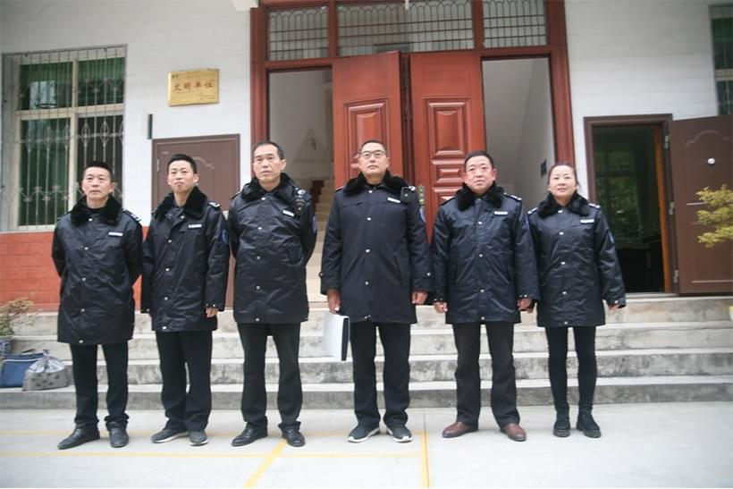

镇巴县非洲猪瘟防控指挥部办公室，扎实开展泔水喂猪专项整治行动
发布日期：2018-12-24作者：周小虎

12月21日至22日，镇巴县非洲猪瘟防控指挥部办公室组织农业、公安、市场监管、泾洋街道办、小洋镇政府、县动物卫生监督所等部门和单位联合开展了泔水喂猪专项整治行动。
根据流行病学调查，泔水喂猪是传播非洲猪瘟的重要原因。非洲猪瘟病毒可在泔水中长时间存活，禁止使用泔水喂猪对非洲猪瘟疫情防控起到关键作用。前期，县农业局印制非洲猪瘟防控明白纸、禁止泔水喂猪挂图、给广大养殖场户的公开信各6000份，分发给各镇（办）广泛张贴发放。各镇（办）和县畜牧兽医站以城镇周边为重点，进村入户发放宣传资料，开展泔水喂猪摸底排查，发现泾洋辖区内泔水喂猪11户，小洋辖区内泔水喂猪4户。这次行动以前期排查的15户为重点，逐户现场检查，主要检查是否储存有泔水、有无泔水蒸煮设施、猪槽内有无剩余泔水等情况。经查，小洋4户泔水养殖户已停止使用泔水，改为饲料饲喂；泾洋11户泔水养殖户，有7户已 停止使用泔水，改为饲料饲喂，仍有4户使用泔水喂猪。检查组责令4户泔水养殖户立即整改，下达整改通知书4份，现场拆除蒸煮泔水锅炉1处，捣毁泔水储存器皿16个，无害化处理库存泔水3000余公斤。4户泔水养殖户均表示知错悔错，承诺今后坚决不再使用泔水喂猪，若有违反，自愿承担相关法律责任。
据了解，各镇（办）、各成员单位将持续开展泔水全链条专项整治，进一步加强禁止泔水喂猪的宣传和排查，做到家喻户晓、人人皆知。对已经停止泔水喂猪的场户加强巡查，防止死灰复燃；对不听劝阻、屡教不改的,将由公安机关依法治安拘留；对继续使用泔水喂猪,引发非洲猪瘟疫情的,一律移送公安机关，依法追究刑事责任。